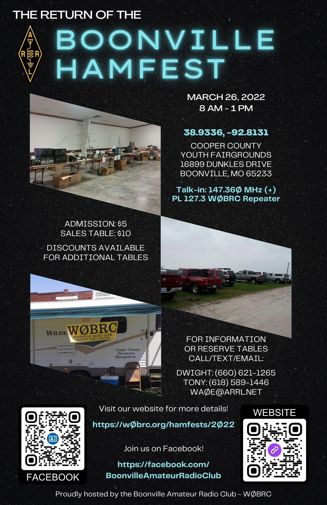

<div class="container">
    <div class="row">
        <div class="col-lg-12 text-center">
            <h1>The Return of the Boonville Hamfest</h1>
        </div>
    </div>
    <div class="row">
        <br/>
    </div>
    <div class="row">
        <div class="col-lg-6 text-center">
            <a href="2022-flyer.jpg">
                </img>
                <br/>Click here to download the flyer!
            </a>
            <a href="2022-flyer.pdf"><br/>(or here for a high-quality PDF version)</a>
        </div>
        <div class="col-lg-6">
            <h3 class="text-center">When: March 26, 2022</h3>
            <div class="row">
                <!-- <div class="col-xs-6 text-right"> -->
                <div class="col-lg-12 text-center">
	                <p><h4>Where:</h4>
	                    <a target="_blank" href="https://maps.google.com/?q=Cooper+County+Fairgrounds+Boonville+MO">
    	                Cooper County Youth Fairgrounds<br/>
	                    16899 Dunkles Drive<br/>
	                    Boonville, MO 65233
	                    </a></p>
	                <p><h4>Hours:</h4>
	                Hamfest: 8 AM - 1 PM
	                </p>
                </div>
                <!-- <div class="col-xs-6 text-left">
                    <div class="h-divider"></div>
                </div> -->
	        </div>
            <div class="row">
                <div class="col-lg-12 text-center">
                    <h3>Talk-in: <a target="_blank" href="/about/repeaternet#repeater-info">147.360 Mhz (+) PL 127.3 W0BRC Repeater</a>
                </div>
            </div>
            <div class="row">
                <div class="col-lg-12 text-center">
                    <p><h3>General Admission/Sales Tables:</h3>
                    Admission: $5<br/>
                    Tables: $10 each with discounted pricing for additional tables<br/>
                    </p>
                    <h3>To reserve tables, contact <a href="mailto:wa0e@arrl.net">wa0e@arrl.net</a> with your telephone number.</h3>
                    <p><h4>For additional information:</h4>
                    Dwight: (660) 621-1265<br/>
                    Tony: (618) 589-1446<br/>
                    </p>
                </div>
            </div>
            <div class="row">
                <div class="h-divider"></div>
                <h3 class="text-center"><a href="{{ "/hamfests/archive/2019" | relative_url }}">Click here</a> to see pictures from the 2019 hamfest!</h3>
            </div>
            <div class="row">
                <div class="h-divider"></div>
                <h3 class="text-center">Directions from I-70</h3>
                <div class="col-lg-6">
                    <h4 class="text-center">West-bound:</h4>
                    <li>Take exit 101 for MO-5/Ashley Rd toward Boonville/Tipton</li>
                    <li>Turn right onto MO-5 N/W Ashley Rd</li>
                    <li>Turn left onto Old Hwy 40 (1 mi)</li>
                    <li>Turn left onto Dunkles Dr (2.7 mi)</li>
                    <li>Head south on Dunkles Dr, over I-70, and the fairgrounds will be immediately on the left (east)</li>
                </div>
                <div class="col-lg-6">
                    <h4 class="text-center">East-bound:</h4>
                    <li>Take exit 98 for MO-41/MO-135 toward Arrow Rock/Pilot Grove</li>
                    <li>Turn left onto MO-135 N/MO-41 N</li>
                    <li>Turn right onto Old Hwy 40</li>
                    <li>Turn right onto Dunkles Dr (1.8 mi)</li>
                    <li>Head south on Dunkles Dr, over I-70, and the fairgrounds will be immediately on the left (east)</li>
                </div>
            </div>
        </div>
    </div>
</div>
